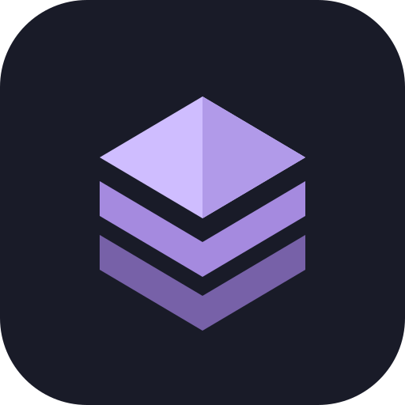

Přidej kategorii, nahraj PNG a poskládej svoji první kombinaci.
Podrž šest teček a přetáhni kategorii na nové místo.
Uložené stavy celé aplikace. Nejde o historii změn projektu ani NFT obrázků.
Klepnutím otevřeš checkpoint na GitHubu. Obnovení verze provádíme bezpečně v repozitáři, nikoli přepsáním tvých uložených NFT projektů.
Poslední operace a chyby uložené v tomto zařízení.
Klepni na krok a vrať se k němu. Zpět a Vpřed jsou dostupné v horní liště. Historie platí pro aktuální otevření aplikace.

Aplikaci můžeš mít na ploše a po prvním načtení ji používat i bez internetu.
V jedné kategorii se vybírá jeden trait. Pro části kresby, které mají být vidět společně, zvol každou vrstvu jako samostatnou kategorii. Pořadí z PSD zůstane zachované.
Pro práci s vrstvami zapni v prohlížeči JavaScript.